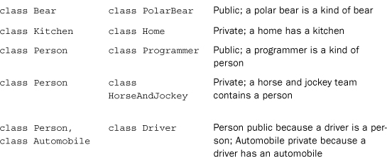

1. They are called functions.
2. It causes the contents of the iostream file to be substituted for this directive before final compilation.
3. It makes definitions made in the std namespace available to a program.
4. cout << "Hello, world\n";
or
cout << "Hello, world" << endl;
5. int cheeses;
6. cheeses = 32;
7. cin >> cheeses;
8. cout << "We have " << cheeses << " varieties of cheese\n";
9. The function froop() expects to be called with one argument, which will be type double, and that the function will return a type int value. For instance, it could be used as follows:
int gval = froop(3.14159);
The function rattle() has no return value and expects an int argument. For instance, it could be used as follows:
rattle(37);
The function prune() returns an int and expects to be used without an argument. For instance, it could be used as follows:
int residue = prune();
10. You don’t have to use return in a function when the function has the return type void. However, you can use it if you don’t give a return value:
return;
1. Having more than one integer type lets you choose the type that is best suited to a particular need. For example, you could use short to conserve space or long to guarantee storage capacity or to find that a particular type speeds up a particular calculation.
short rbis = 80; // or short int rbis = 80;
unsigned int q = 42110; // or unsigned q = 42110;
unsigned long ants = 3000000000;
// or long long ants = 3000000000;
Note: Don’t count on int being large enough to hold 3,000,000,000. Also if your system supports universal list-initialization, you could use it:
short rbis = {80}; // = is optional
unsigned int q {42110}; // could use = {42110}
long long ants {3000000000};
3. C++ provides no automatic safeguards to keep you from exceeding integer limits; you can use the climits header file to determine what the limits are.
4. The constant 33L is type long, whereas the constant 33 is type int.
5. The two statements are not really equivalent, although they have the same effect on some systems. Most importantly, the first statement assigns the letter A to grade only on a system using the ASCII code, while the second statement also works for other codes. Second, 65 is a type int constant, whereas 'A' is a type char constant.
6. Here are four ways:
char c = 88;
cout << c << endl; // char type prints as character
cout.put(char(88)); // put() prints char as character
cout << char(88) << endl; // new-style type cast value to char
cout << (char)88 << endl; // old-style type cast value to char
7. The answer depends on how large the two types are. If long is 4 bytes, there is no loss. That’s because the largest long value would be about 2 billion, which is 10 digits. Because double provides at least 13 significant figures, no rounding would be needed. The long long type, on the other hand, can reach 19 digits, which exceeds the 13 significant figures guaranteed for double.
a. 8 * 9 + 2 is 72 + 2 is 74
b. 6 * 3 / 4 is 18 / 4 is 4
c. 3 / 4 * 6 is 0 * 6 is 0
d. 6.0 * 3 / 4 is 18.0 / 4 is 4.5
e. 15 % 4 is 3
9. Either of the following would work for the first task:
int pos = (int) x1 + (int) x2;
int pos = int(x1) + int(x2);
To add them as type double and then convert, you could do either of the following:
int pos = (int) (x1 + x2);
int pos = int(x1 + x2);
a. int
b. float
c. char
d. char32_t
e. double
a. char actors[30];
b. short betsie[100];
c. float chuck[13];
d. long double dipsea[64];
a. array<char,30> actors;
b. array<short, 100> betsie;
c. array<float, 13> chuck;
d. array<long double, 64> dipsea;
3. int oddly[5] = {1, 3, 5, 7, 9};
4. int even = oddly[0] + oddly[4];
5. cout << ideas[1] << "\n"; // or << endl;
6. char lunch[13] = "cheeseburger"; // number of characters + 1
or
char lunch[] = "cheeseburger"; // let the compiler count elements
7. string lunch = "Waldorf Salad";
or, if you don’t have a using directive,
std::string lunch = "Waldorf Salad";
struct fish {
char kind[20];
int weight;
float length;
};
fish petes =
{
"trout",
12,
26.25
};
10. enum Response {No, Yes, Maybe};
double * pd = &ted;
cout << *pd << "\n";
float * pf = treacle; // or = &treacle[0]
cout << pf[0] << " " << pf[9] << "\n";
// or use *pf and *(pf + 9)
13. This assumes that the iostream and vector header files have been included and that there is a using directive:
unsigned int size;
cout << "Enter a positive integer: ";
cin >> size;
int * dyn = new int [size];
vector<int> dv(size);
14. Yes, it is valid. The expression "Home of the jolly bytes" is a string constant; hence it evaluates as the address of the beginning of the string. The cout object interprets the address of a char as an invitation to print a string, but the type cast (int *) converts the address to type pointer-to-int, which is then printed as an address. In short, the statement prints the address of the string, assuming the int type is wide enough to hold an address.
struct fish
{
char kind[20];
int weight;
float length;
};
fish * pole = new fish;
cout << "Enter kind of fish: ";
cin >> pole->kind;
16. Using cin >> address causes a program to skip over whitespace until it finds nonwhitespace. It then reads characters until it encounters whitespace again. Thus, it will skip over the newline following the numeric input, avoiding that problem. On the other hand, it will read just a single word, not an entire line.
#include <string>
#include <vector>
#include <array>
const int Str_num {10}; // or = 10
...
std::vector<std::string> vstr(Str_num);
std::array<std::string, Str_num> astr;
1. An entry-condition loop evaluates a test expression before entering the body of the loop. If the condition is initially false, the loop never executes its body. An exit-condition loop evaluates a test expression after processing the body of the loop. Thus, the loop body is executed once, even if the test expression is initially false. The for and while loops are entry-condition loops, and the do while loop is an exit-condition loop.
2. It would print the following:
01234
Note that cout << endl; is not part of the loop body (because there are no braces).
3. It would print the following:
0369
12
4. It would print the following:
6
8
5. It would print the following:
k = 8
6. It’s simplest to use the *= operator:
for (int num = 1; num <= 64; num *= 2)
cout << num << " ";
7. You enclose the statements within paired braces to form a single compound statement, or block.
8. Yes, the first statement is valid. The expression 1,024 consists of two expressions—1 and 024—joined by a comma operator. The value is the value of the right-hand expression. This is 024, which is octal for 20, so the declaration assigns the value 20 to x. The second statement is also valid. However, operator precedence causes it to be evaluated as follows:
(y = 1), 024;
That is, the left expression sets y to 1, and the value of the entire expression, which isn’t used, is 024, or 20.
9. The cin >> ch form skips over spaces, newlines, and tabs when it encounters them. The other two forms read those characters.
1. Both versions give the same answers, but the if else version is more efficient. Consider what happens, for example, when ch is a space. Version 1, after incrementing spaces, tests whether the character is a newline. This wastes time because the program has already established that ch is a space and hence could not be a newline. Version 2, in the same situation, skips the newline test.
2. Both ++ch and ch + 1 have the same numerical value. But ++ch is type char and prints as a character, while ch + 1, because it adds a char to an int, is type int and prints as a number.
3. Because the program uses ch = '$' instead of ch == '$', the combined input and output looks like this:
Hi!
H$i$!$
$Send $10 or $20 now!
S$e$n$d$ $ct1 = 9, ct2 = 9
Each character is converted to the $ character before being printed the second time. Also the value of the expression ch = $ is the code for the $ character, hence nonzero, hence true; so ct2 is incremented each time.
a. weight >= 115 && weight < 125
b. ch == 'q' || ch == 'Q'
c. x % 2 == 0 && x != 26
d. x % 2 == 0 && !(x % 26 == 0)
e. donation >= 1000 && donation <= 2000 || guest == 1
f. (ch >= 'a' && ch <= 'z') ||(ch >= 'A' && ch <= 'Z')
5. Not necessarily. For example, if x is 10, then !x is 0 and !!x is 1. However, if x is a bool variable, then !!x is x.
6. (x < 0)? -x : x
or
(x >= 0)? x : -x;
switch (ch)
{
case 'A': a_grade++;
break;
case 'B': b_grade++;
break;
case 'C': c_grade++;
break;
case 'D': d_grade++;
break;
default: f_grade++;
break;
}
8. If you use integer labels and the user types a noninteger such as q, the program hangs because integer input can’t process a character. But if you use character labels and the user types an integer such as 5, character input will process 5 as a character. Then the default part of the switch can suggest entering another character.
9. Here is one version:
int line = 0;
char ch;
while (cin.get(ch) && ch != 'Q')
{
if (ch == '\n')
line++;
}
1. The three steps are defining the function, providing a prototype, and calling the function.
a. void igor(void); // or void igor()
b. float tofu(int n); // or float tofu(int);
c. double mpg(double miles, double gallons);
d. long summation(long harray[], int size);
e. double doctor(const char * str);
f. void ofcourse(boss dude);
g. char * plot(map *pmap);
void set_array(int arr[], int size, int value)
{
for (int i = 0; i < size; i++)
arr[i] = value;
}
void set_array(int * begin, int * end, int value)
{
for (int * pt = begin; pt != end; pt++)
pt* = value;
}
double biggest (const double foot[], int size)
{
double max;
if (size < 1)
{
cout << "Invalid array size of " << size << endl;
cout << "Returning a value of 0\n";
return 0;
}
else // not necessary because return terminates program
{
max = foot[0];
for (int i = 1; i < size; i++)
if (foot[i] > max)
max = foot[i];
return max;
}
}
6. You use the const qualifier with pointers to protect the original pointed-to data from being altered. When a program passes a fundamental type such as an int or a double, it passes it by value so that the function works with a copy. Thus, the original data is already protected.
7. A string can be stored in a char array, it can be represented by a string constant in double quotation marks, and it can be represented by a pointer pointing to the first character of a string.
int replace(char * str, char c1, char c2)
{
int count = 0;
while (*str) // while not at end of string
{
if (*str == c1)
{
*str = c2;
count++;
}
str++; // advance to next character
}
return count;
}
9. Because C++ interprets "pizza" as the address of its first element, applying the * operator yields the value of that first element, which is the character p. Because C++ interprets "taco" as the address of its first element, it interprets "taco"[2] as the value of the element two positions down the line—that is, as the character c. In other words, the string constant acts the same as an array name.
10. To pass it by value, you just pass the structure name glitz. To pass its address, you use the address operator &glitz. Passing by the value automatically protects the original data, but it takes time and memory. Passing by address saves time and memory but doesn’t protect the original data unless you use the const modifier for the function parameter. Also passing by value means you can use ordinary structure member notation, but passing a pointer means you have to remember to use the indirect membership operator.
11. int judge (int (*pf)(const char *));
a. Note that if ap is an applicant structure, then ap.credit_ratings is an array name and ap.credit_ratings[i] is an array element.
void display(applicant ap)
{
cout << ap.name << endl;
for (int i = 0; i < 3; i++)
cout << ap.credit_ratings[i] << endl;
}
b. Note that if pa is a pointer to an applicant structure, then pa->credit_ratings is an array name and pa->credit_ratings[i] is an array element.
void show(const applicant * pa)
{
cout << pa->name << endl;
for (int i = 0; i < 3; i++)
cout << pa->credit_ratings[i] << endl;
}
typedef void (*p_f1)(applicant *);
p_f1 p1 = f1;
typedef const char * (*p_f2)(const applicant *, const applicant *);
p_f2 p2 = f2;
p_f1 ap[5];
p_f2 (*pa)[10];
1. Short, nonrecursive functions that can fit in one line of code are good candidates for inline status.
a. void song(const char * name, int times = 1);
b. None. Only prototypes contain the default value information.
c. Yes, provided that you retain the default value for times:
void song(char * name = "O, My Papa", int times = 1);
3. You can use either the string ″\″″ or the character ′″′ to print a quotation mark. The following functions show both methods:
#include <iostream.h>
void iquote(int n)
{
cout << "\"" << n << "\"";
}
void iquote(double x)
{
cout << '"' << x << '"';
}
void iquote(const char * str)
{
cout << "\"" << str << "\"";
}
a. This function shouldn’t alter the structure members, so use the const qualifier:
void show_box(const box & container)
{
cout << "Made by " << container. maker << endl;
cout << "Height = " << container.height << endl;
cout << "Width = " << container.width << endl;
cout << "Length = " << container.length << endl;
cout << "Volume = " << container.volume << endl;
}
b.
void set_volume(box & crate)
{
crate.volume = crate.height * crate.width * crate.length;
}
5. First, change the prototypes to the following:
// function to modify array object
void fill(std::array<double, Seasons> & pa);
// function that uses array object without modifying it
void show(const std::array<double, Seasons> & da);
Note that show() should use const to protect the object from being modified. Next, within main(), change the fill() call to this:
fill(expenses);
There’s no change to the show() call.
Next, the new fill() should look like this:
void fill(std::array<double, Seasons> & pa) // changed
{
using namespace std;
for (int i = 0; i < Seasons; i++)
{
cout << "Enter " << Snames[i] << " expenses: ";
cin >> pa[i]; // changed
}
}
Note that (*pa)[i] gets changed to the simpler pa[i].
Finally, the only change to show() is to the function header:
void show(std::array<double, Seasons> & da)
a. This can be done by using a default value for the second argument:
double mass(double d, double v = 1.0);
It can also be done by using function overloading:
double mass(double d, double v);
double mass(double d);
b. You can’t use a default for the repeat value because you have to provide default values from right to left. You can use overloading:
void repeat(int times, const char * str);
void repeat(const char * str);
c. You can use function overloading:
int average(int a, int b);
double average(double x, double y);
d. You can’t do this because both versions would have the same signature.
template<class T>
T max(T t1, T t2) // or T max(const T & t1, const T & t2)
{
return t1 > t2? t1 : t2;
}
template<> box max(box b1, box b2)
{
return b1.volume > b2.volume? b1 : b2;
}
9. v1 is type float, v2 is type float &, v3 is type float &, v4 is type int, and v5 is type double. The literal 2.0 is type double, so the product 2.0 * m is double.
a. homer is automatically an automatic variable.
b. secret should be defined as an external variable in one file and declared using extern in the second file.
c. topsecret could be defined as a static variable with internal linkage by prefacing the external definition with the keyword static. Or it could be defined in an unnamed namespace.
d. beencalled should be defined as a local static variable by prefacing a declaration in the function with the keyword static.
2. A using declaration makes available a single name from a namespace, and it has the scope corresponding to the declarative region in which the using declaration occurs. A using directive makes available all the names in a namespace. When you use a using directive, it is as if you have declared the names in the smallest declarative region containing both the using declaration and the namespace itself.
#include <iostream>
int main()
{
double x;
std::cout << "Enter value: ";
while (! (std::cin >> x) )
{
std::cout << "Bad input. Please enter a number: ";
std::cin.clear();
while (std::cin.get() != '\n')
continue;
}
std::cout << "Value = " << x << std::endl;
return 0;
}
4. Here is the revised code:
#include <iostream>
int main()
{
using std::cin;
using std::cout;
using std::endl;
double x;
cout << "Enter value: ";
while (! (cin >> x) )
{
cout << "Bad input. Please enter a number: ";
cin.clear();
while (cin.get() != '\n')
continue;
}
cout << "Value = " << x << endl;
return 0;
}
5. You could have separate static function definitions in each file. Or each file could define the appropriate average() function in an unnamed namespace.
10
4
0
Other: 10, 1
another(): 10, -4
1
4, 1, 2
2
2
4, 1, 2
2
1. A class is a definition of a user-defined type. A class declaration specifies how data is to be stored, and it specifies the methods (class member functions) that can be used to access and manipulate that data.
2. A class represents the operations you can perform on a class object with a public interface of class methods; this is abstraction. The class can use private visibility (the default) for data members, meaning that the data can be accessed only through the member functions; this is data hiding. Details of the implementation, such as data representation and method code, are hidden; this is encapsulation.
3. A class defines a type, including how it can be used. An object is a variable or another data object, such as that produced by new, which is created and used according to the class definition. The relationship between a class and an object is the same as that between a standard type and a variable of that type.
4. If you create several objects of a given class, each object comes with storage for its own set of data. But all the objects use the one set of member functions. (Typically, methods are public and data members are private, but that’s a matter of policy, not of class requirements.)
5. This example use char arrays to hold the character data, but you could use string class objects instead.
// #include <cstring>
// class definition
class BankAccount
{
private:
char name[40]; // or std::string name;
char acctnum[25]; // or std::string acctnum;
double balance;
public:
BankAccount(const char * client, const char * num, double bal = 0.0);
//or BankAccount(const std::string & client,
// const std::string & num, double bal = 0.0);
void show(void) const;
void deposit(double cash);
void withdraw(double cash);
};
6. A class constructor is called when you create an object of that class or when you explicitly call the constructor. A class destructor is called when the object expires.
7. These are two possible solutions (note that you must include cstring or string.h in order to use strncpy() or else you must include string to use the string class):
BankAccount::BankAccount(const char * client, const char * num, double bal)
{
strncpy(name, client, 39);
name[39] = '\0';
strncpy(acctnum, num, 24);
acctnum[24] = '\0';
balance = bal;
}
or
BankAccount::BankAccount(const std::string & client,
const std::string & num, double bal)
{
name = client;
acctnum = num;
balance = bal;
}
Keep in mind that default arguments go in the prototype, not in the function definition.
8. A default constructor either has no arguments or has defaults for all the arguments. Having a default constructor enables you to declare objects without initializing them, even if you’ve already defined an initializing constructor. It also allows you to declare arrays.
// stock30.h
#ifndef STOCK30_H_
#define STOCK30_H_
class Stock
{
private:
std::string company;
long shares;
double share_val;
double total_val;
void set_tot() { total_val = shares * share_val; }
public:
Stock(); // default constructor
Stock(const std::string & co, long n, double pr);
~Stock() {} // do-nothing destructor
void buy(long num, double price);
void sell(long num, double price);
void update(double price);
void show() const;
const Stock & topval(const Stock & s) const;
int numshares() const { return shares; }
double shareval() const { return share_val; }
double totalval() const { return total_val; }
const string & co_name() const { return company; }
};
10. The this pointer is available to class methods. It points to the object used to invoke the method. Thus, this is the address of the object, and *this represents the object itself.
1. Here’s a prototype for the class definition file and a function definition for the methods file:
// prototype
Stonewt operator*(double mult);
// definition — let constructor do the work
Stonewt Stonewt::operator*(double mult)
{
return Stonewt(mult * pounds);
}
2. A member function is part of a class definition and is invoked by a particular object. The member function can access members of the invoking object implicitly, without using the membership operator. A friend function is not part of a class, so it’s called as a straight function call. It can’t access class members implicitly, so it must use the membership operator applied to an object passed as an argument. Compare, for instance, the answer to Review Question 1 with the answer to Review Question 4.
3. It must be a friend to access private members, but it doesn’t have to be a friend to access public members.
4. Here’s a prototype for the class definition file and a function definition for the methods file:
// prototype
friend Stonewt operator*(double mult, const Stonewt & s);
// definition — let constructor do the work
Stonewt operator*(double mult, const Stonewt & s)
{
return Stonewt(mult * s.pounds);
}
5. The following five operators cannot be overloaded:
sizeof
.
.*
::
? :
6. These operators must be defined by using a member function.
7. Here are a possible prototype and definition:
// prototype and inline definition
operator double () {return mag;}
Note, however, that it makes better sense to use the magval() method than to define this conversion function.
a. The syntax is fine, but this constructor leaves the str pointer uninitialized. The constructor should either set the pointer to NULL or use new [] to initialize the pointer.
b. This constructor does not create a new string; it merely copies the address of the old string. It should use new [] and strcpy().
c. It copies the string without allocating the space to store it. It should use new char[len + 1] to allocate the proper amount of memory.
2. First, when an object of that type expires, the data pointed to by the object’s member pointer remains in memory, using space and remaining inaccessible because the pointer has been lost. That can be fixed by having the class destructor delete memory allocated by new in the constructor functions. Second, after the destructor deletes such memory, it might end up trying to delete it twice if a program initializes one such object to another. That’s because the default initialization of one object to another copies pointer values but does not copy the pointed-to data, and this produces two pointers to the same data. The solution is to define a class copy constructor that causes initialization to copy the pointed-to data. Third, assigning one object to another can produce the same situation of two pointers pointing to the same data. The solution is to overload the assignment operator so that it copies the data, not the pointers.
3. C++ automatically provides the following member functions:
• A default constructor if you define no constructors
• A copy constructor if you don’t define one
• An assignment operator if you don’t define one
• A default destructor if you don’t define one
• An address operator if you don’t define one
The default constructor does nothing, but it allows you to declare arrays and uninitialized objects. The default copy constructor and the default assignment operator use memberwise assignment. The default destructor does nothing. The implicit address operator returns the address of the invoking object (that is, the value of the this pointer).
4. The personality member should be declared either as a character array or as a pointer-to-char. Or you could make it a String object or a string object. The declaration fails to make the methods public. Then there are several small errors. Here is a possible solution, with changes (other than deletions) in boldface:
#include <iostream>
#include <cstring>
using namespace std;
class nifty
{
private: // optional
char personality[40]; // provide array size
int talents;
public: // needed
// methods
nifty();
nifty(const char * s);
friend ostream & operator<<(ostream & os, const nifty & n);
}; // note closing semicolon
nifty::nifty()
{
personality[0] = '\0';
talents = 0;
}
nifty::nifty(const char * s)
{
strcpy(personality, s);
talents = 0;
}
ostream & operator<<(ostream & os, const nifty & n)
{
os << n.personality << '\n';
os << n.talent << '\n';
return os;
}
Here is another possible solution:
#include <iostream>
#include <cstring>
using namespace std;
class nifty
{
private: // optional
char * personality; // create a pointer
int talents;
public: // needed
// methods
nifty();
nifty(const char * s);
nifty(const nifty & n);
~nifty() { delete [] personality; }
nifty & operator=(const nifty & n) const;
friend ostream & operator<<(ostream & os, const nifty & n);
}; // note closing semicolon
nifty::nifty()
{
personality = NULL;
talents = 0;
}
nifty::nifty(const char * s)
{
personality = new char [strlen(s) + 1];
strcpy(personality, s);
talents = 0;
}
ostream & operator<<(ostream & os, const nifty & n)
{
os << n.personality << '\n';
os << n.talent << '\n';
return os;
}
a.
Golfer nancy; // default constructor
Golfer lulu("Little Lulu"); // Golfer(const char * name, int g)
Golfer roy("Roy Hobbs", 12); // Golfer(const char * name, int g)
Golfer * par = new Golfer; // default constructor
Golfer next = lulu; // Golfer(const Golfer &g)
Golfer hazard = "Weed Thwacker"; // Golfer(const char * name, int g)
*par = nancy; // default assignment operator
nancy = "Nancy Putter";// Golfer(const char * name, int g), then
// the default assignment operator
Note that some compilers additionally call the default assignment operator for Statements 5 and 6.
b. The class should define an assignment operator that copies data rather than addresses.
1. The public members of the base class become public members of the derived class. The protected members of the base class become protected members of the derived class. The private members of the base class are inherited but cannot be accessed directly. The answer to Review Question 2 provides the exceptions to these general rules.
2. The constructor methods are not inherited, the destructor is not inherited, the assignment operator is not inherited, and friends are not inherited.
3. If the return type were void, you would still be able to use single assignment but not chain assignment:
baseDMA magazine("Pandering to Glitz", 1);
baseDMA gift1, gift2, gift3;
gift1 = magazine; // ok
gift 2 = gift3 = gift1; // no longer valid
If the method returned an object instead of a reference, the method execution would be slowed a bit because the return statement would involve copying the object.
4. Constructors are called in the order of derivation, with the most ancestral constructor called first. Destructors are called in the opposite order.
5. Yes, every class requires its own constructors. If the derived class adds no new members, the constructor can have an empty body, but it must exist.
6. Only the derived-class method is called. It supersedes the base-class definition. A base-class method is called only if the derived class does not redefine the method or if you use the scope-resolution operator. However, you really should declare as virtual any functions that will be redefined.
7. The derived class should define an assignment operator if the derived-class constructors use the new or new [] operator to initialize pointers that are members of that class. More generally, the derived class should define an assignment operator if the default assignment is incorrect for derived-class members.
8. Yes, you can assign the address of an object of a derived class to a pointer to the base class. You can assign the address of a base-class object to a pointer to a derived class (downcasting) only by making an explicit type cast, and it is not necessarily safe to use such a pointer.
9. Yes, you can assign an object of a derived class to an object of the base class. Any data members that are new to the derived type are not passed to the base type, however. The program uses the base-class assignment operator. Assignment in the opposite direction (base to derived) is possible only if the derived class defines a conversion operator, which is a constructor that has a reference to the base type as its sole argument, or else defines an assignment operator with a base-class parameter.
10. It can do so because C++ allows a reference to a base type to refer to any type derived from that base.
11. Passing an object by value invokes the copy constructor. Because the formal argument is a base-class object, the base-class copy constructor is invoked. The copy constructor has as its argument a reference to the base class, and this reference can refer to the derived object passed as an argument. The net result is that a new base-class object whose members correspond to the base class portion of the derived object is produced.
12. Passing an object by reference instead of by value enables the function to avail itself of virtual functions. Also passing an object by reference instead of by value may use less memory and time, particularly for large objects. The main advantage of passing by value is that it protects the original data, but you can accomplish the same end by passing the reference as a const type.
13. If head() is a regular method, then ph->head() invokes Corporation::head(). If head() is a virtual function, then ph->head() invokes PublicCorporation::head().
14. First, the situation does not fit the is-a model, so public inheritance is not appropriate. Second, the definition of area() in House hides the Kitchen version of area() because the two methods have different signatures.

Gloam::Gloam(int g, const char * s) : glip(g), fb(s) { }
Gloam::Gloam(int g, const Frabjous & fr) : glip(g), fb(fr) { }
// note: the above uses the default Frabjous copy constructor
void Gloam::tell()
{
fb.tell();
cout << glip << endl;
}
Gloam::Gloam(int g, const char * s)
: glip(g), Frabjous(s) { }
Gloam::Gloam(int g, const Frabjous & fr)
: glip(g), Frabjous(fr) { }
// note: the above uses the default Frabjous copy constructor
void Gloam::tell()
{
Frabjous::tell();
cout << glip << endl;
}
class Stack<Worker *>
{
private:
enum {MAX = 10}; // constant specific to class
Worker * items[MAX]; // holds stack items
int top; // index for top stack item
public:
Stack();
Boolean isempty();
Boolean isfull();
Boolean push(const Worker * & item); // add item to stack
Boolean pop(Worker * & item); // pop top into item
};
ArrayTP<string> sa;
StackTP< ArrayTP<double> > stck_arr_db;
ArrayTP< StackTP<Worker *> > arr_stk_wpr;
Listing 14.18 generates four templates: ArrayTP<int, 10>, ArrayTP<double, 10>, ArrayTP<int,5>, and Array< ArrayTP<int,5>, 10>.
6. If two lines of inheritance for a class share a common ancestor, the class winds up having two copies of the ancestor’s members. Making the ancestor class a virtual base class to its immediate descendants solves that problem.
a. The friend declaration should be as follows:
friend class clasp;
b. This needs a forward declaration so that the compiler can interpret void snip(muff &):
class muff; // forward declaration
class cuff {
public:
void snip(muff &) { ... }
...
};
class muff {
friend void cuff::snip(muff &);
...
};
c. First, the cuff class declaration should precede the muff class so that the compiler can understand the term cuff::snip(). Second, the compiler needs a forward declaration of muff so that it can understand snip(muff &):
class muff; // forward declaration
class cuff {
public:
void snip(muff &) { ... }
...
};
class muff {
friend void cuff::snip(muff &);
...
};
2. No. For Class A to have a friend that’s a member function of Class B, the B declaration must precede the A declaration. A forward declaration is not enough because it would tell A that B is a class, but it wouldn’t reveal the names of the class members. Similarly, if B has a friend that’s a member function of A, the complete A declaration must precede the B declaration. These two requirements are mutually exclusive.
3. The only access to a class is through its public interface, which means the only thing you can do with a Sauce object is call the constructor to create one. The other members (soy and sugar) are private by default.
4. Suppose the function f1() calls the function f2(). A return statement in f2() causes program execution to resume at the next statement following the f2() function call in function f1(). A throw statement causes the program to back up through the current sequence of function calls until it finds a try block that directly or indirectly contains the call to f2(). This might be in f1() or in a function that called f1(), and so on. Once there, execution goes to the next matching catch block, not to the first statement after the function call.
5. You should arrange the catch blocks in order, from most derived class to least derived.
6. For Sample #1, the if condition is true if pg points to a Superb object or to an object of any class descended from Superb. In particular, it is also true if pg points to a Magnificent object. In Sample #2, the if condition is true only for a Superb object, not for objects derived from Superb.
7. The dynamic_cast operator only allows upcasting in a class hierarchy, whereas a static_cast operator allows both upcasting and downcasting. The static_cast operator also allows conversions from enumeration types to integer types, and vice versa, and between various numeric types.
#include <string>
using namespace std;
class RQ1
{
private:
string st; // a string object
public:
RQ1() : st("") {}
RQ1(const char * s) : st(s) {}
~RQ1() {};
// more stuff
};
The explicit copy constructor, destructor, and assignment operator are no longer needed because the string object provides its own memory management.
2. You can assign one string object to another. A string object provides its own memory management so that you normally don’t have to worry about a string exceeding the capacity of its holder.
#include <string>
#include <cctype>
using namespace std;
void ToUpper(string & str)
{
for (int i = 0; i < str.size(); i++)
str[i] = toupper(str[i]);
}
auto_ptr<int> pia= new int[20]; // wrong, use with new, not new[]
auto_ptr<string>(new string); // wrong, no name for pointer
int rigue = 7;
auto_ptr<int>(&rigue); // wrong, memory not allocated by new
auto_ptr dbl (new double); // wrong, omits <double>
5. The LIFO aspect of a stack means you might have to remove a lot of clubs before reaching the one you need.
6. The set will store just one copy of each value, so, say, five scores of 5 would be stored as a single 5.
7. Using iterators allows you to use objects with a pointer-like interface to move through data that is organized in some fashion other than an array (for example, data in a doubly linked list).
8. The STL approach allows STL functions to be used with ordinary pointers to ordinary arrays as well as with iterators to STL container classes, thus increasing generality.
9. You can assign one vector object to another. A vector manages its own memory, so you can insert items into a vector and have it resize itself automatically. By using the at() method, you can get automatic bounds checking.
10. The two sort() functions and the random_shuffle() function require a random access iterator, whereas a list object just has a bidirectional iterator. You can use the list template class sort() member functions (see Appendix G, “The STL Methods and Functions”) instead of the general-purpose functions to do the sorting, but there is no member function equivalent to random_shuffle(). However, you could copy the list to a vector, shuffle the vector, and copy the results back to the list.
1. The iostream file defines the classes, constants, and manipulators used to manage input and output. These objects manage the streams and buffers used to handle I/O. The file also creates standard objects (cin, cout, cerr, and clog and their wide-character equivalents) used to handle the standard input and output streams connected to every program.
2. Keyboard entry generates a series of characters. Typing 121 generates three characters, each represented by a 1-byte binary code. If the value is to be stored as type int, these three characters have to be converted to a single binary representation of the value 121.
3. By default, both the standard output and the standard error send output to the standard output device, typically a monitor. If you have the operating system redirect output to a file, however, the standard output connects to the file instead of to the screen, but the standard error continues to be connected to the screen.
4. The ostream class defines a version of the operator<<() function for each basic C++ type. The compiler interprets an expression like
cout << spot
as the following:
cout.operator<<(spot)
It can then match this method call to the function prototype that has the same argument type.
5. You can concatenate output methods that return type ostream &. This causes the invoking of a method with an object to return that object. The returned object can then invoke the next method in a sequence.
//rq17-6.cpp
#include <iostream>
#include <iomanip>
int main()
{
using namespace std;
cout << "Enter an integer: ";
int n;
cin >> n;
cout << setw(15) << "base ten" << setw(15)
<< "base sixteen" << setw(15) << "base eight" << "\n";
cout.setf(ios::showbase); // or cout << showbase;
cout << setw(15) << n << hex << setw(15) << n
<< oct << setw(15) << n << "\n";
return 0;
}
//rq17-7.cpp
#include <iostream>
#include <iomanip>
int main()
{
using namespace std;
char name[20];
float hourly;
float hours;
cout << "Enter your name: ";
cin.get(name, 20).get();
cout << "Enter your hourly wages: ";
cin >> hourly;
cout << "Enter number of hours worked: ";
cin >> hours;
cout.setf(ios::showpoint);
cout.setf(ios::fixed, ios::floatfield);
cout.setf(ios::right, ios::adjustfield);
// or cout << showpoint << fixed << right;
cout << "First format:\n";
cout << setw(30) << name << ": $" << setprecision(2)
<< setw(10) << hourly << ":" << setprecision(1)
<< setw(5) << hours << "\n";
cout << "Second format:\n";
cout.setf(ios::left, ios::adjustfield);
cout << setw(30) << name << ": $" << setprecision(2)
<< setw(10) << hourly << ":" << setprecision(1)
<< setw(5) << hours << "\n";
return 0;
}
8. Here is the output:
ct1 = 5; ct2 = 9
The first part of the program ignores spaces and newline characters; the second part doesn’t. Note that the second part of the program begins reading at the newline character following the first q, and it counts that newline character as part of its total.
9. The ignore() form falters if the input line exceeds 80 characters. In that case, it skips only the first 80 characters.
class Z200
{
private:
int j;
char ch;
double z;
public:
Z200(int jv, char chv, zv) : j(jv), ch(chv), z(zv) {}
...
};
double x {8.8}; // or = {8.8}
std::string s {"What a bracing effect!"};
int k{99};
Z200 zip{200,'Z',0.67});
std::vector<int> ai {3, 9, 4, 7, 1};
2. r1(w) is valid, and the argument rx refers to w.
r1(w+1) is valid, and the argument rx refers to a temporary initialized to the value of w+1.
r1(up(w)) is valid, and the argument rx refers to a temporary initialized to the return value of up(w).
In general, if an lvalue is passed to a const lvalue reference parameter, the parameter is initialized to the lvalue. If an rvalue is passed to the function, a const lvalue reference parameter refers to a temporary copy of the value.
r2(w) is valid, and the argument rx refers to w.
r2(w+1) is an error because w+1 is an rvalue.
r2(up(w)) is an error because the return value of up(w) is an rvalue.
In general, if an lvalue is passed to a non-const lvalue reference parameter, the parameter is initialized to the lvalue. But a non-const lvalue reference parameter can’t accept an rvalue function argument.
r3(w) is an error because an rvalue reference cannot refer to an lvalue, such as w.
r3(w+1) is valid, and rx refers to the temporary value of the expression w+1.
r3(up(w)) is valid, and rx refers to the temporary return value of up(w)
a.
double & rx
const double & rx
const double & rx
The non-const lvalue reference matches the lvalue argument w. The other two arguments are rvalues, and the const lvalue reference can refer to copies of them.
b.
double & rx
double && rx
double && rx
The lvalue reference matches the lvalue argument w, and the rvalue references matches the two rvalue arguments.
c.
const double & rx
double && rx
double && rx
The const lvalue reference matches the lvalue argument w, and the rvalue reference matches the two rvalues.
In short, a non-const lvalue parameter matches an lvalue argument, a non-const rvalue parameter matches an rvalue argument, and a const lvalue parameter can match either an lvalue or an rvalue argument, but the compiler will prefer the first two choices, if available.
4. They are the default constructor, the copy constructor, the move constructor, the destructor, the copy assignment operator, and the move assignment operator. They are special because the compiler can automatically provide defaulted versions of these functions, depending on the context.
5. A move constructor can be used when it makes sense to transfer ownership of data instead of copying it, but there is no mechanism for transferring ownership of a standard array. If the Fizzle class used a pointer and dynamic memory allocation, then one can transfer ownership by reassigning the address of the data to a new pointer.
#include <iostream>
#include <algorithm>
template<typename T>
void show2(double x, T fp) {std::cout << x << " -> " << fp(x) << '\n';}
int main()
{
show2(18.0, [](double x){return 1.8*x + 32;});
return 0;
}
#include <iostream>
#include <array>
#include <algorithm>
const int Size = 5;
template<typename T>
void sum(std::array<double,Size> a, T& fp);
int main()
{
double total = 0.0;
std::array<double, Size> temp_c = {32.1, 34.3, 37.8, 35.2, 34.7};
sum(temp_c, [&total](double w){total += w;});
std::cout << "total: " << total << '\n';
std::cin.get();
return 0;
}
template<typename T>
void sum(std::array<double,Size> a, T& fp)
{
for(auto pt = a.begin(); pt != a.end(); ++pt)
{
fp(*pt);
}
}